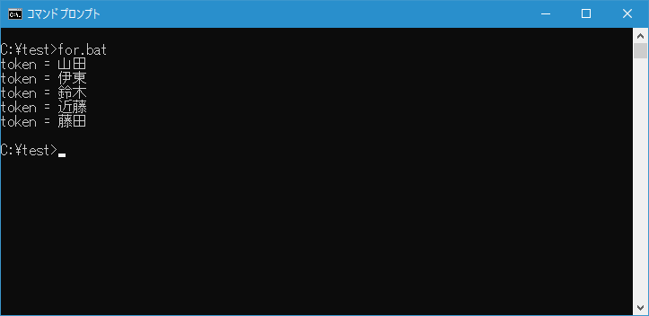
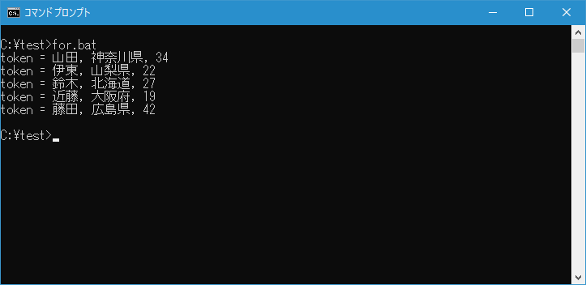
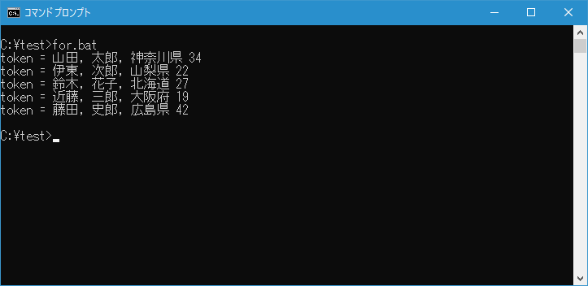
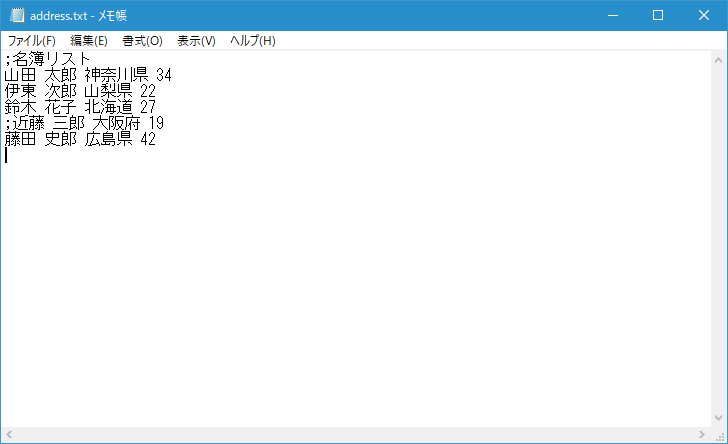
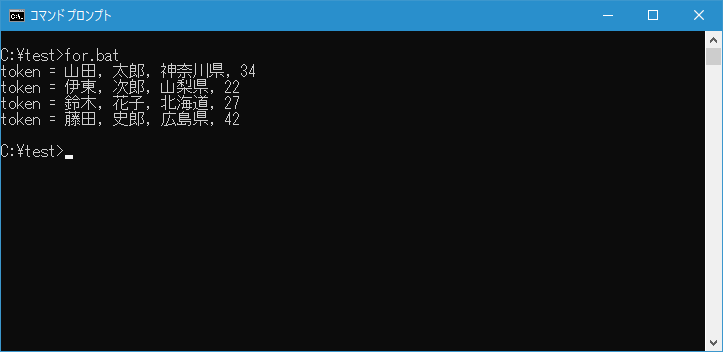
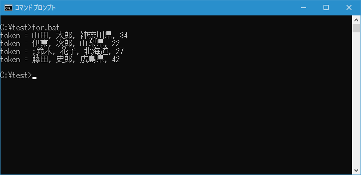
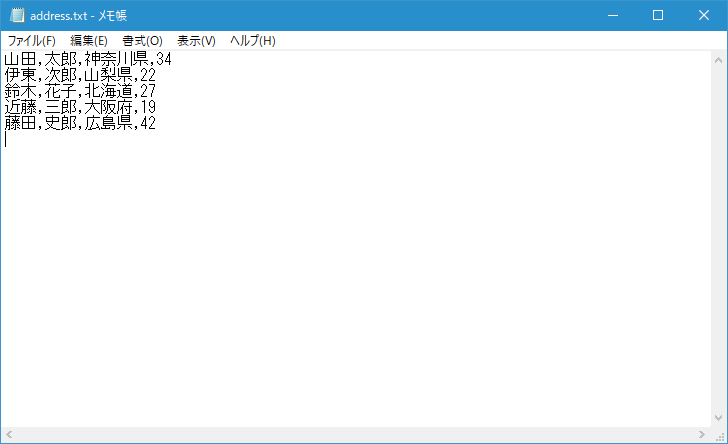
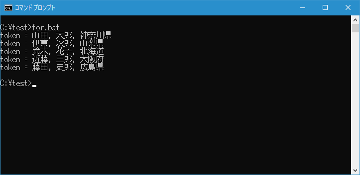
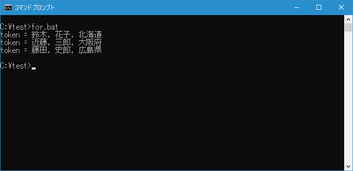

テキストファイルの内容を区切り文字でトークンに分解し繰り返し処理を使う(FOR)
FOR コマンドは数値を変化させたりディレクトリに含まれるファイルを順に取得したりしながら繰り返しを行うことができますが、他にもテキストファイルの内容を読み込み、区切り文字でトークンに分解してから順に読み込んで処理することもできます。ここでは FOR コマンドを使いバッチファイルの中でテキストファイルの内容を区切り文字でトークンに分解し繰り返し処理を行う方法について解説します。
※ FOR コマンドの基本的な使い方については「バッチファイルで繰り返し処理を使う(FOR)」で解説しています。
目次
テキストファイルを読み込んで処理する
FOR コマンドにはいくつか書式がありますが、テキストファイルを読み込んで処理する場合は次の書式を使います。
FOR /F ["オプション"] %%変数 IN (ファイル セット) DO コマンド
オプションなしで FOR コマンドを実行した場合、ファイルセットに記述したファイルを読み込み、最初に行ごとに分割します。そして行ごとにデフォルトの区切り文字である半角スペースとタブでトークンに分割し、最初に見つかったトークンを変数に読み込みながら繰り返し処理が行われます。
今回読み込むファイルとしてカレントディレクトリに address.txt を用意しました。各行は半角スペースで区切りそれぞれ4つの項目の値が入力されています。
テストを行うために次のような簡単なバッチファイル for.bat を c:\test に作成しました。
@echo off
for /f %%t in (address.txt) do (
echo token = %%t
)
バッチファイルを実行すると、指定したファイルを各行ごとに半角スペースでトークンに区切り、最初のトークンを変数 t に順に格納しながらコマンドを実行します。

区切り文字や各行ごとに取得するトークンの数はオプションで指定することができます。順に確認していきます。
行毎に取得するトークンの位置と数を指定する
デフォルトでは各行毎に最初のトークンを取得して変数に格納していました。オプションを使うことで、行毎に何番目のトークンを取得するのかを指定することができます。
例えば各行の2番目のトークンだけを取得したい場合はオプションを次のように記述します。
FOR /F "token=2" %%変数 IN (ファイル セット) DO コマンド
各行から複数のトークンを取得することもできます。例えば各行の1番目、3番目、4番目のトークンを取得したい場合はオプションを次のように記述します。
FOR /F "token=1,3,4" %%変数 IN (ファイル セット) DO コマンド
範囲で指定することもできます。例えば各行の2番目から4番目のトークンを取得したい場合はオプションを次のように記述します。
FOR /F "token=2-4" %%変数 IN (ファイル セット) DO コマンド
複数のトークンを取得する場合、変数が自動的に追加されます。例えば FOR コマンドで変数として %%i を指定した場合、3つのトークンを取得することにすると自動的に %%j と %%k が定義されて3つのトークンがそれぞれの変数に格納されます(自動で決まる変数名は、指定した変数名のアルファベット順で次のアルファベットになります。3個以上の場合も同様です)。
テストを行うために次のような簡単なバッチファイル for.bat を c:\test に作成しました。
@echo off
for /f "tokens="1,3,4" %%t in (address.txt) do (
echo token = %%t, %%u, %%v
)
バッチファイルを実行すると、指定したファイルを各行ごとに半角スペースでトークンに区切り、1番目と3番目と4番目のトークンを変数 t 、変数 u 、変数 v に順に格納しながらコマンドを実行します。

-- --
取得するトークンを指定する時に最後にアスタリスク(*)を記述すると、最後に取得したトークンよりもあとのテキストがすべて変数に格納されます。例えば次のように記述すると変数が3つ使用されて、最初の変数には1番目のトークン、2番目の変数には2番目のトークン、3番目の変数には2番目のトークンよりあとの行末までのテキストがすべて格納されます。(アスタリスクの前にはカンマなどは不要です)。
FOR /F "token=1,2*" %%変数 IN (ファイル セット) DO コマンド
テストを行うために次のような簡単なバッチファイル for.bat を c:\test に作成しました。
@echo off
for /f "tokens="1,2*" %%t in (address.txt) do (
echo token = %%t, %%u, %%v
)
バッチファイルを実行すると、指定したファイルを各行ごとに半角スペースでトークンに区切り、1番目と2番目のトークンを変数 t と変数 u に格納し、それ以降のテキストを変数 v に順に格納しながらコマンドを実行します。

コメント行として処理される行頭の文字を指定する
デフォルトでは行の先頭にセミコロン(;)が記述されている行はコメントとして無視されます。例えば読み込むテキストファイルを次のように変更してみました。

このファイルを読み込み4つのトークンを表示するように記述したバッチファイルを実行してみると、行頭にセミコロンが記述された行は無視されていることが確認できます。

オプションを使うことで、コメントとして無視される行頭の文字を別の文字に変更することができます。例えば行頭にビックリマーク(!)がある行をコメント行としたい場合には次のように記述します。(指定できる文字は1文字だけです)。
FOR /F "eol=!" %%変数 IN (ファイル セット) DO コマンド
テストを行うために次のような簡単なバッチファイル for.bat を c:\test に作成しました。
@echo off
for /f "eol=! tokens="1-4" %%t in (address.txt) do (
echo token = %%t, %%u, %%v, %%w
)
また読み込むテキストファイルを次のように変更してみました。
バッチファイルを実行すると、行の先頭にビックリマークがない行に対して1番目から3番目のトークンを変数に順に格納しながらコマンドを実行します。行頭にセミコロンがある行はコメントとして扱われないのでセミコロンも文字の1つとして扱われています。

トークンに分割する区切り文字を変更する
トークンに分割する区切り文字はデフォルトでは半角スペースですが別の文字に変更することができます。例えば区切り文字をカンマ(,)にするには次のように記述します。
FOR /F "delims=," %%変数 IN (ファイル セット) DO コマンド
区切り文字を複数指定することもできます。例えば区切り文字としてカンマ(,)、半角スペース、セミコロン(;)の3つを指定するには次のように記述します。
FOR /F "delims=, ;" %%変数 IN (ファイル セット) DO コマンド
テストを行うために次のような簡単なバッチファイル for.bat を c:\test に作成しました。
@echo off
for /f "delims=, tokens=1-3" %%t in (address.txt) do (
echo token = %%t, %%u, %%v
)
また読み込むテキストファイルを次のように変更してみました。

バッチファイルを実行すると、行の先頭にビックリマークがない行に対して1番目から3番目のトークンを変数に順に格納しながらコマンドを実行します。行頭にセミコロンがある行はコメントとして扱われないのでセミコロンも文字の1つとして扱われています。

ファイルの行頭でスキップする行数を指定する
読み込むファイルの中で最初の数行を処理する必要がない場合はスキップすることができます。例えば最初の2行をスキップするには次のように記述します。
FOR /F "skip=2" %%変数 IN (ファイル セット) DO コマンド
テストを行うために次のような簡単なバッチファイル for.bat を c:\test に作成しました。
@echo off
for /f "skip=2 tokens=1-3" %%t in (address.txt) do (
echo token = %%t, %%u, %%v
)
また読み込むテキストファイルを次のように用意しました。
バッチファイルを実行すると、ファイルの最初の2行をスキップして3行目から繰り返し処理が実行されています。

空白が含まれるファイル名を指定する
読み込むファイル名に空白が含まれる場合、ファイル名をダブルクォーテーションで囲う必要があります。この時オプションとして usebackq を指定して次のように記述します。
FOR /F "usebackq" %%変数 IN ("ファイル名") DO コマンド
テストを行うために次のような簡単なバッチファイル for.bat を c:\test に作成しました。
@echo off
for /f "usebackq tokens=1-3" %%t in ("address test.txt") do (
echo token = %%t, %%u, %%v
)
また読み込むテキストファイルの名前を address test.txt と空白が含まれるファイル名にしました。
バッチファイルを実行すると、空白が含まれるファイル名であっても問題なく処理することができました。
-- --
FOR コマンドを使ってテキストファイルの内容を読み込んでトークンに分割し繰り返し処理を行う方法について解説しました。
( Written by Tatsuo Ikura )

著者 / TATSUO IKURA
初心者～中級者の方を対象としたプログラミング方法や開発環境の構築の解説を行うサイトの運営を行っています。